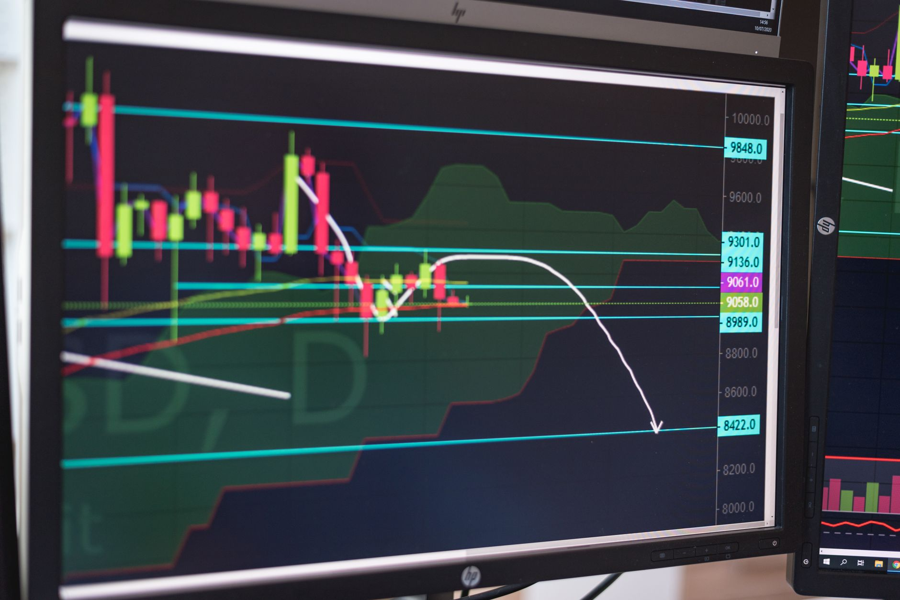

Learning how to read silver spot price charts comes down to four things: knowing which number you're looking at, recognizing volatility, following the trend instead of the noise, and converting the chart price into what silver actually costs you. You don't need trading software or candlestick theory. You need those four skills.
This matters because the chart price is never the price you pay. Physical silver always costs spot plus a premium, and the gap between those two numbers is where new buyers get confused. If you want the background on why the chart moves the way it does, what moves the silver spot price covers the drivers in detail. This guide covers reading the chart itself.
Key Takeaways
- The spot price is the cost of silver for immediate delivery. It comes from COMEX futures trading and updates nearly 24 hours a day during the week
- Silver's annual volatility runs around 30%, roughly twice gold's, so daily swings of 1-3% are normal and not a buy or sell signal
- Weekly and monthly charts show the trend that matters for buyers. Daily charts mostly show noise
- Your true cost is total price paid divided by troy ounces received. Compare that to spot to see your real premium
What Does the Silver Spot Price Actually Mean?
The spot price is the market price for one troy ounce of silver delivered right now. When a chart on Kitco or a dealer site shows silver at $32.00, that's the spot price. It comes from trading in the most active COMEX futures contract, and it updates almost continuously. CME Group's Globex system trades silver futures about 23 hours a day, Sunday evening through Friday afternoon Eastern time.
One unit detail trips up a lot of first-time buyers. Spot is quoted per troy ounce, which is 31.1 grams. A standard ounce is 28.35 grams. Every bullion product is weighed in troy ounces, so the chart and the product label match. Just don't compare either to your kitchen scale.
The spot price is a reference number, not a retail price. No dealer sells physical silver at spot. What spot gives you is the baseline that every premium, every quote, and every buyback offer is built on.
Spot Price vs Futures: Which Number Are You Looking At?
Spot is the price for immediate delivery. A futures price is an agreed price for delivery on a set date, sometimes months out. Financial news often quotes a futures contract. Dealer charts almost always show spot. The two track each other closely, usually within a few cents, but they are different numbers answering different questions.
As a physical buyer, you can ignore futures almost entirely. Futures prices reflect expectations, storage costs, and interest rates. Spot reflects what the metal costs today. When you check a chart before buying, confirm it says "spot" and confirm the currency. That's the number your dealer prices from.

How to Read Volatility on a Silver Chart
Volatility is how far the price swings over a given period. Silver swings hard. As of 2026, silver's annual volatility runs around 30%, roughly twice gold's, a pattern documented across decades of CME and LBMA price data. A 2% move in a single day is a Tuesday for silver. The same move in gold would be news.
On the chart, volatility shows up as the height of the swings. A wide trading range over a month means high volatility. A narrow band means the market is quiet. Neither is good or bad by itself. What volatility tells you is how much patience you need. A volatile chart rewards buyers who spread purchases out instead of buying everything on one day.
The practical takeaway: never judge silver by one day's candle. A 3% red day looks alarming in isolation. Zoom out to three months and it usually disappears into the range.
Which Timeframe Should You Watch?
Match the chart timeframe to your actual decision. If you're buying physical silver to hold for years, the hourly chart is useless to you and the daily chart is mostly noise.
- 1-day and 1-week views show noise. Useful only for timing a purchase you've already decided to make
- 1-month and 3-month views show the near-term range. Good for spotting whether you're buying near the top or bottom of the recent band
- 6-month and 1-year views show the trend. This is the buyer's chart. Higher lows over months signal sustained demand. A flat line signals equilibrium
- 5-year and longer views show context. Silver's January 1980 spike to $49.45 and the 2011 run both look very different at this scale than they felt day to day
A simple habit beats any indicator: check the 1-year chart before you buy. Note whether the price sits in the upper or lower third of that range. That single observation puts your purchase in context. Buyers who want to remove timing decisions entirely spread purchases on a schedule instead, which is the whole argument behind dollar cost averaging into silver.

What the Gold-Silver Ratio Adds to the Picture
Most charting sites let you plot the gold-silver ratio: the gold spot price divided by the silver spot price. It reads as a second opinion on whether silver is cheap or expensive relative to gold. The long-run average sits near 60:1. The ratio spiked to roughly 124:1 in March 2020, the most extreme silver undervaluation in modern records, and silver nearly doubled over the following year.
A high ratio, above 80 or so, has historically marked periods where silver was cheap relative to gold. A low ratio, under 50, has marked the opposite. It's not a timing tool. It's context. The silver-to-gold ratio guide explains how buyers actually use it.
How to Turn a Chart Into Your True Cost Per Ounce
The chart tells you what silver trades for. It doesn't tell you what silver costs you. Physical silver always carries a premium over spot, and that premium varies by product and seller. The calculation that connects the two takes one line of math.
1 oz coin at $36.00 (free shipping)
$36.00 ÷ 1 oz = $36.00/oz
Premium: $4.00 over spot (12.5%)
10 oz bar at $338.00 + $8 shipping
$346.00 ÷ 10 oz = $34.60/oz
Premium: $2.60 over spot (8.1%)
Run that math on every quote before you compare dealers. Include shipping and any card or wire fees. As of 2026, typical premiums run from about 2-8% over spot for bars and generic rounds from online dealers up to 18% or more at retail coin shops, so the spread between a good price and a bad one is real money. The full breakdown is in why you pay more than spot.
That's the whole skill. Read spot, check the trend on a 1-year view, accept the volatility, and convert quotes into cost per ounce. Everything else on a silver chart is detail you can learn later or skip entirely.
Frequently Asked Questions
Sources
- CME Group, Silver futures contract specifications and Globex trading hours, retrieved 2026-06-11, cmegroup.com/markets/metals/precious/silver.html
- Kitco, Live silver spot price charts, retrieved 2026-06-11, kitco.com/charts/livesilver.html
- LBMA, Precious metal prices and historical data, retrieved 2026-06-11, lbma.org.uk/prices-and-data
- The Silver Institute, World Silver Survey, industrial demand share, retrieved 2026-06-11, silverinstitute.org/silver-supply-demand/